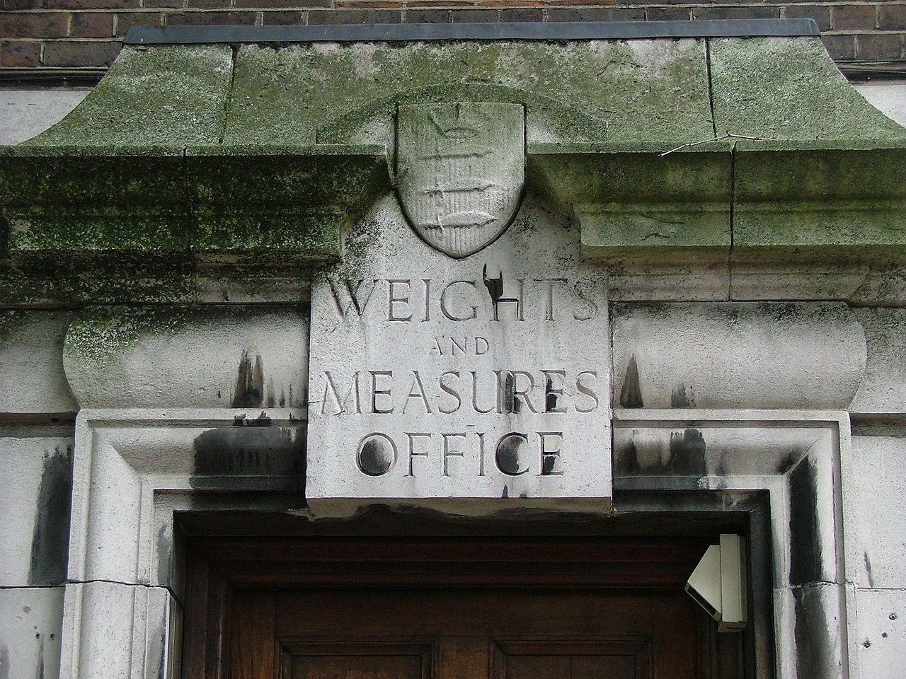

Data Analysis in Political Science
Welcome to Data Analysis!
Justin Leinaweaver (Spring 2026)
Introductions
Name
Year in School
Major(s)
How much do you love statistics? (1-10 scale)
Required Courses in PLSC
Required Courses in PLSC
Required Courses in PLSC
The answer is in the syllabus

Our goal as political scientists:
To generate knowledge about the social world
The method is “science”
The key is “measurement”
Warm-up Exercise
The Big Aim
- Describe the distribution of student heights in our class
Warm-up Exercise
Describe the distribution of student heights in our class
Order the students in our class by height (shortest to tallest)
A simple rank-ordering by height shows us:
What the middle of our distribution looks like,
How spread around the middle our observations are, and
The extreme values in the sample
Warm-up Exercise
Describe the distribution of student heights in our class
What is the specific range of heights of the students in our class (minimum to maximum in inches)?
Warm-up Exercise
Describe the distribution of student heights in our class
What is the average height of the students in our class (to the nearest millimeter)?
What do we learn about “height” from our warm-up exercises?
Order by height
Range in inches
Average in millimeter
Science as Measurement
Subject
Tool
Process
Validation
Science as Measurement
Subject
Tool
Process
Validation

Science as Measurement
Subject
Tool
Process
Validation
Science as Measurement
Subject
Tool
Process
Validation

Science answers questions with measurements
Every measurement is uncertain
So, every answer includes uncertainty
To create useful measurements you must:
Define the Concept
Specify the Tool
Specify the Process
Test for Robustness
For Next Class
Find us a recent news story that includes data as a central component
Story must include a data visualization of some kind (e.g. table or graphic)
No duplicated news stories!
Details on Canvas